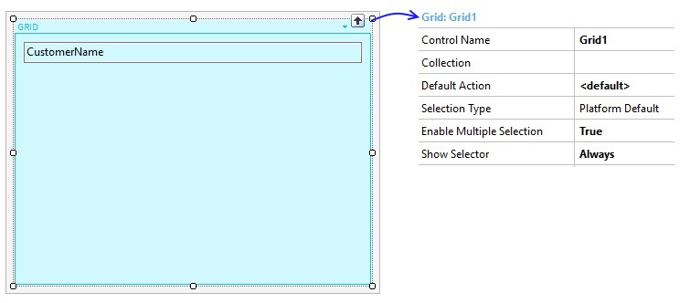
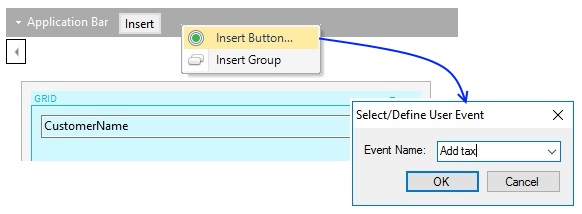

Grids with Multiple Selection for Native Mobile Applications
Your application has one or more actions that may be applied to one or more selected items in a grid. GeneXus lets you scan all selected items in a Grid with the for each selected line command. The code to execute an action on all selected items will look as follows.
for each selected line [in <GridName>]
<call_to_procedure>
endfor
Warning: The Procedure object must have only input parameters (output or hybrid parameters are not allowed)..
Adding multiple selectionsTo further explain the use of multiple selection actions, suppose that you have a set of customers and you want to apply a tax of 25% for some of them depending on their total amount. Step 1 - Setting the UI behaviorPreviously, create a Customer Transaction object as follows and apply the WorkWithDevices pattern.
In the Grid control from the List section of WorkWithDevicesCustomer, set the following properties:
 Step 2 - Creating the actionCreate a new action called "Add tax" (right-click on the Application Bar > Insert Button).  This action will perform an ApplyTax procedure for updating the CustomerAmount by adding interest of 25% on the selected items. In this procedure, you have to write the following code:
for each
CustomerAmount = CustomerAmount * 1.25
endfor
The procedure must have a parm rule as it is shown below for automatically filter items in the for each command. Parm(in:CustomerId); 3. Writing the action execution codeFinally, you have to write the section code associated with the action 'Add tax' on the Event section as follows.
Event 'Add tax'
Composite
For each selected line in Grid1
ApplyTax(CustomerId)
Endfor
Refresh
EndComposite
EndEvent
Note:
For each selected line in Grid1
ApplyTax(&Customer.CurrentItem.CustomerId)
Endfor
where &Customer is a variable based on an SDT or BC item. Application runtime behavior1. You have to select the items that you would like to update. Every item can be selected by tapping on the left check-box. 2. Once you finish the selection, tap on "Add tax" action for executing the action apply the 25% tax interest. 3. After the refresh of the device, you can see the total amount has changed correctly. Notes
|